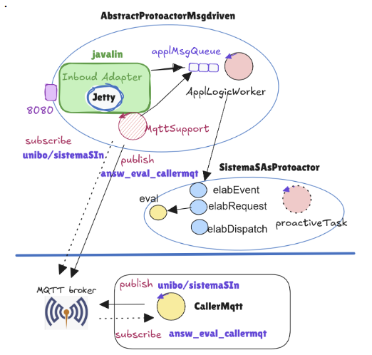

GIT repo: https://github.com/desypellegrini/IngegneriaSistemiSoftware2026.git
GIT repo: https://github.com/desypellegrini/IngegneriaSistemiSoftware2026.git
protected double eval(double x) {
return Math.sin(x) + Math.cos( Math.sqrt(3)*x);
}

GIT repo: https://github.com/desypellegrini/IngegneriaSistemiSoftware2026.git